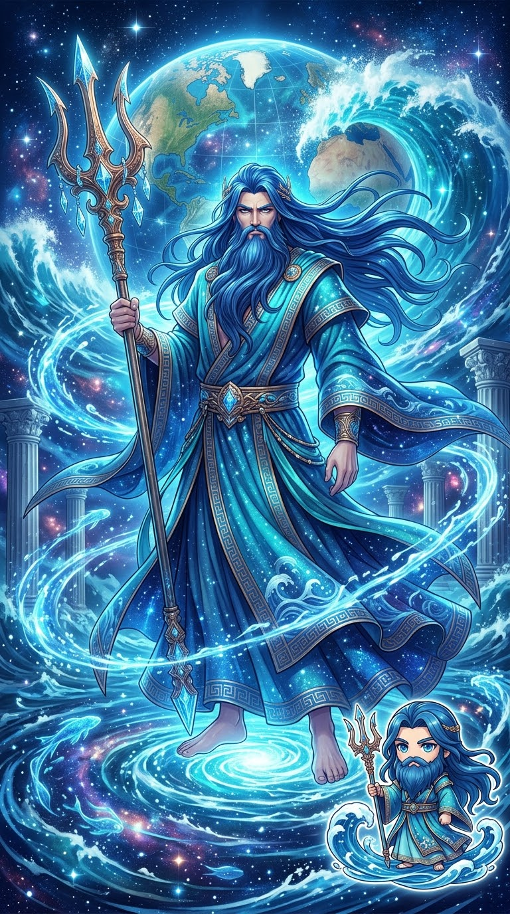
01 · GREEK MYTHOLOGY
Ὠκεανός｜俄刻阿諾斯｜Oceanus
環繞世界的大洋泰坦
俄刻阿諾斯是十二位泰坦中與水域最密切的一位。他象徵環繞世界的巨大水流，與妹妹忒堤斯結合後，生下河神與海洋神女，讓世界的河流、泉水與水域都擁有神族血脈。
泰坦與宙斯開戰時，俄刻阿諾斯並非最積極的反抗者。他的形象常帶有古老、廣大而持續流動的力量，像一條環抱世界的河流，連結天地各處。
THE TITANS · THE FIRST DIVINE DYNASTY
蓋亞與烏拉諾斯的十二位泰坦開啟神族的第一個王朝。他們的愛、恐懼、反抗與子女，決定了後來奧林帕斯眾神與英雄世界的走向。
大地蓋亞與天空烏拉諾斯生下十二位泰坦。烏拉諾斯害怕獨眼巨人與百臂巨人的力量，將他們壓制在大地深處。蓋亞為了拯救子女，請求泰坦們反抗，最終由克洛諾斯拿起鐮刀推翻父親，成為新的神王。
然而，克洛諾斯同樣害怕自己的孩子奪走王位，因此吞下瑞亞生下的每一個孩子。瑞亞救下宙斯，宙斯長大後救出兄姊，帶領新一代神祇與泰坦交戰。漫長的泰坦戰爭結束後，宙斯成為新的統治者，神界進入奧林帕斯時代。
THE TWELVE TITANS
每位泰坦都有自己的神格、家族與故事。他們不只是被宙斯取代的舊神族，也是後世許多神祇與神話事件的源頭。

01 · GREEK MYTHOLOGY
環繞世界的大洋泰坦
俄刻阿諾斯是十二位泰坦中與水域最密切的一位。他象徵環繞世界的巨大水流，與妹妹忒堤斯結合後，生下河神與海洋神女，讓世界的河流、泉水與水域都擁有神族血脈。
泰坦與宙斯開戰時，俄刻阿諾斯並非最積極的反抗者。他的形象常帶有古老、廣大而持續流動的力量，像一條環抱世界的河流，連結天地各處。
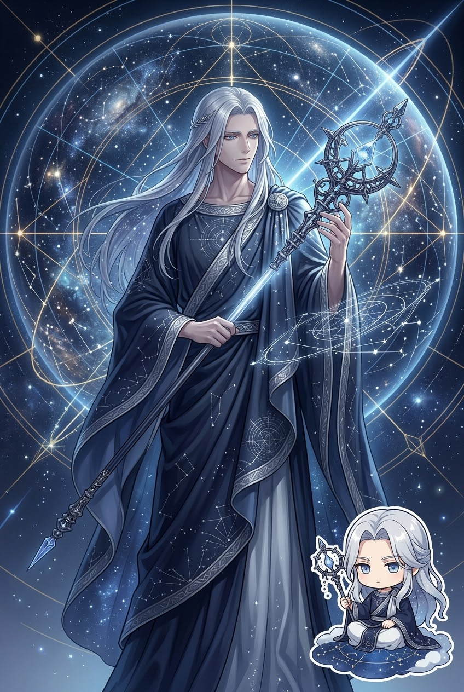
02 · GREEK MYTHOLOGY
福柏的伴侶，阿波羅與阿耳忒彌斯的祖先
科俄斯是第一代泰坦之一，與福柏結合，生下勒托與阿斯忒里亞。透過這兩位女兒，他的家族延伸至阿波羅、阿耳忒彌斯與赫卡忒，連結了神諭、光明、狩獵、月夜與魔法等神話領域。
科俄斯本人的獨立冒險故事不多，但他的家族在後世神話中極為重要。勒托遭到赫拉敵視時仍生下雙胞胎神祇，而阿斯忒里亞的女兒赫卡忒則成為掌管十字路口、夜與魔法的重要女神。
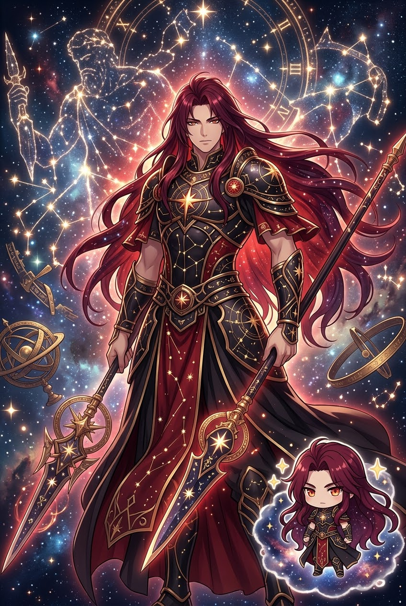
03 · GREEK MYTHOLOGY
連結星辰、戰鬥與危險力量的泰坦
克里俄斯與海神女厄律比亞結合，生下阿斯特賴俄斯、帕拉斯與珀耳塞斯。這條家族支系把天空星辰、戰鬥力量與危險的破壞性力量連在一起，也延伸至風神、勝利女神尼刻等後代。
克里俄斯在泰坦戰爭中的個人事蹟沒有像克洛諾斯那樣被突出描寫，但他的後代廣泛參與世界秩序：阿斯特賴俄斯與黎明女神厄俄斯相連，帕拉斯的子女則象徵勝利、熱忱與力量。
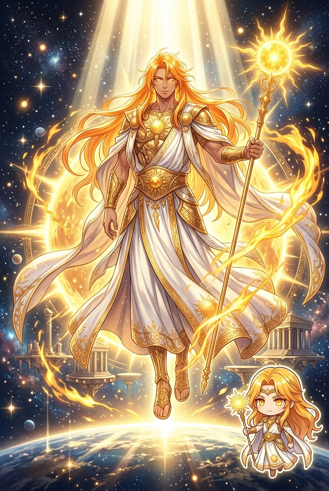
04 · GREEK MYTHOLOGY
天光泰坦，太陽、月亮與黎明的父親
許珀里翁與忒伊亞結合，生下赫利俄斯、塞勒涅與厄俄斯，分別代表太陽、月亮與黎明。每天太陽升起、夜空月光流轉、晨曦照亮大地，都能在他的家族中找到神話形象。
許珀里翁本人常與高天、光輝及天體秩序相連。他的重要性不只在於自身神格，也在於他的子女讓天空中的週期變成可被講述、理解的神話故事。
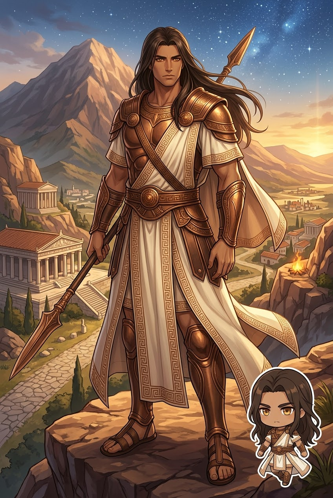
05 · GREEK MYTHOLOGY
阿特拉斯、普羅米修斯等人的父親
伊阿佩托斯與克呂墨涅結合，生下阿特拉斯、普羅米修斯、厄庇墨透斯與墨諾提俄斯。四個兒子的故事分別牽涉天空的重擔、智慧與火、後知後覺，以及驕傲力量遭到懲罰，成為泰坦後裔中最著名的一支。
他的家族直接進入人類的神話世界：普羅米修斯為人類取得火種，宙斯以嚴厲的懲罰回應；厄庇墨透斯迎娶潘朵拉，帶出人類苦難的故事；阿特拉斯則被迫承擔天空的重擔。
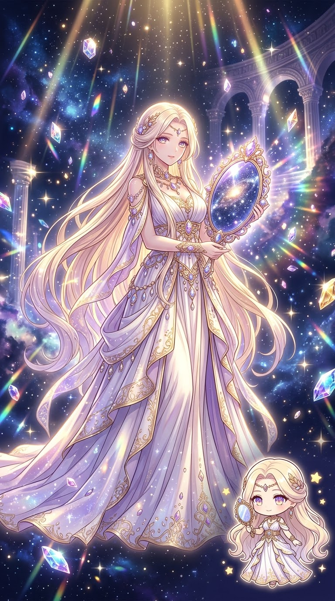
06 · GREEK MYTHOLOGY
光輝與視覺的泰坦女神
忒伊亞是光輝、明亮與視覺的泰坦女神。她與許珀里翁生下赫利俄斯、塞勒涅與厄俄斯，讓太陽的耀眼光芒、月亮的柔和銀光與黎明的晨色成為同一個神族家系。
忒伊亞也與珍貴金屬及寶石的光澤相連。她的名字本身帶有神聖光輝的意味，而她的子女則讓天體運行與每日光線變化成為世界秩序的一部分。
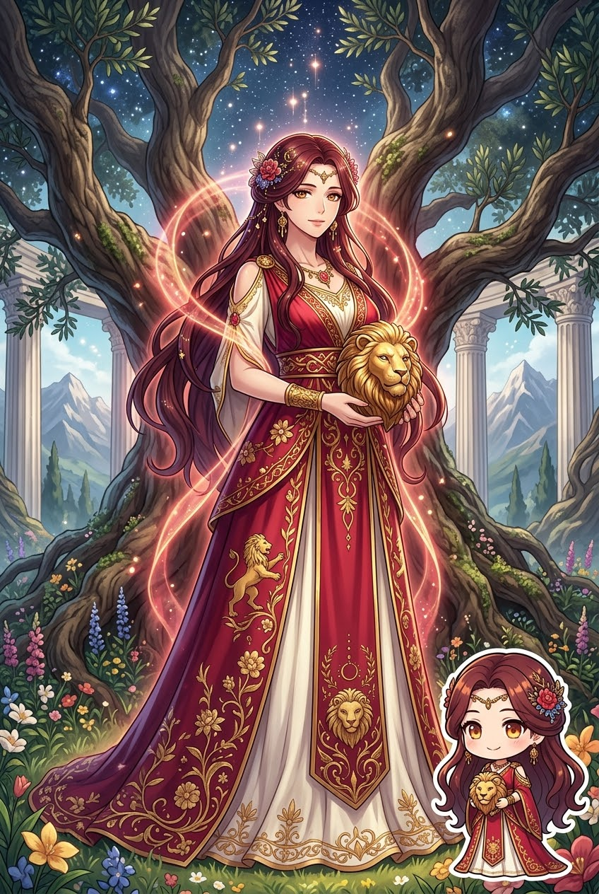
07 · GREEK MYTHOLOGY
眾神之母，宙斯的守護者
瑞亞與弟弟克洛諾斯結合，生下赫斯提亞、德墨忒耳、赫拉、哈帝斯、波塞頓與宙斯。克洛諾斯害怕子女將來推翻自己，便在孩子出生後將他們吞下，瑞亞只能眼看孩子被囚在丈夫體內。
當宙斯出生時，瑞亞決定救下最小的兒子。她把襁褓中的石頭交給克洛諾斯吞下，並將宙斯秘密送走撫養。宙斯長大後救出兄姊，帶領新一代神祇對抗泰坦，瑞亞的計謀因此改變了整個神界的命運。
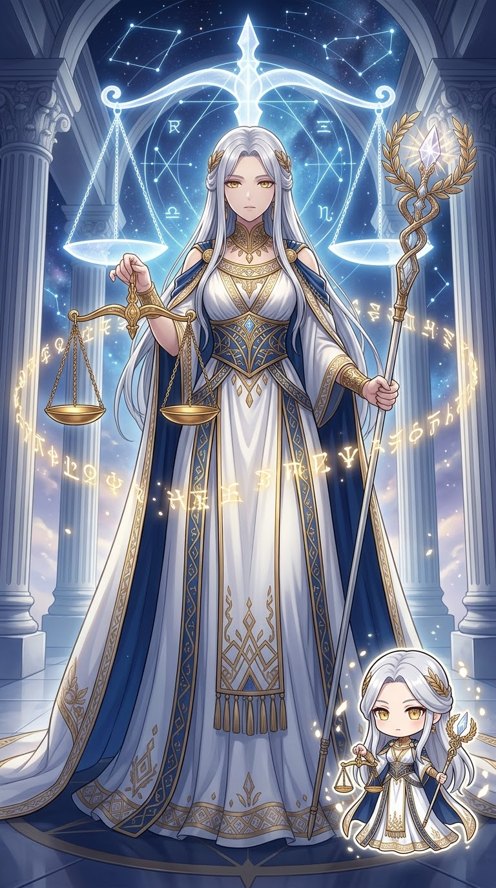
08 · GREEK MYTHOLOGY
神聖秩序、習俗與正義的泰坦女神
忒彌斯代表神聖秩序、正當的習俗與維繫社會的規範。她不只象徵公平裁決，也代表世界必須遵循的秩序。在後來的神話中，她與宙斯並肩，協助維持眾神與人間的秩序。
忒彌斯常與預言及神諭傳統相連，也被視為時序女神荷賴與命運女神摩伊萊的重要母系來源。她的力量不靠武器，而是讓規則、正義與命運各自走向應有的位置。
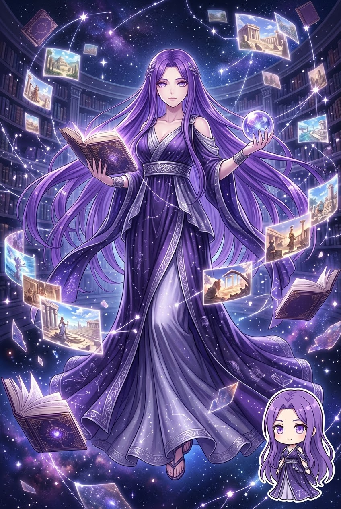
09 · GREEK MYTHOLOGY
記憶女神，九位繆思的母親
謨涅摩敘涅是記憶的泰坦女神。她與宙斯相會九夜，生下九位繆思女神。繆思掌管詩歌、歷史、音樂、舞蹈與各種藝術，使記憶能透過歌唱、故事與創作流傳下去。
在古希臘人的想像中，詩人與歌者的靈感來自繆思，而繆思的母親就是記憶本身。她因此連結了神話、知識與文化傳承，讓英雄事蹟和眾神故事得以被世世代代記住。
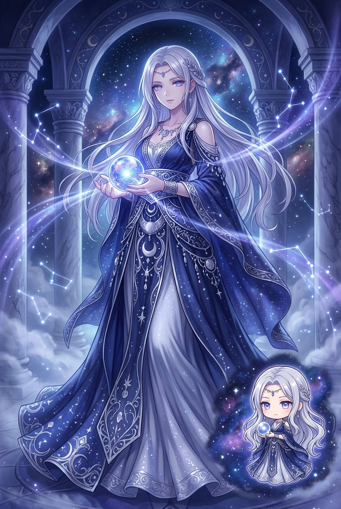
10 · GREEK MYTHOLOGY
光輝與神諭傳統的泰坦女神
福柏與科俄斯結合，生下勒托與阿斯忒里亞。她的家族延伸出阿波羅與阿耳忒彌斯，也透過阿斯忒里亞連結赫卡忒，讓神諭、光明、狩獵、星辰與夜間魔法聚集在同一支系。
福柏的名字與明亮、純淨的光輝相連。後來阿波羅也使用與她相近的稱號，並承接德爾斐神諭的重要地位，使福柏的家族成為希臘神話中預言與神聖知識的重要源頭。
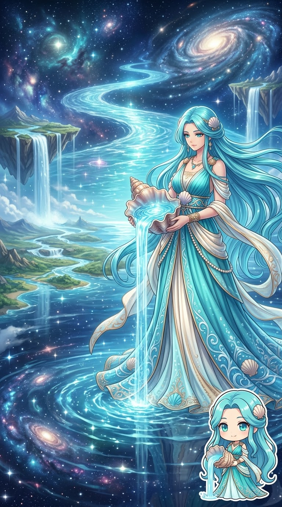
11 · GREEK MYTHOLOGY
淡水與水域生命的泰坦母神
忒堤斯與俄刻阿諾斯結合，生下大量河神與海洋神女。河流、泉水與滋養大地的水源，都能在她的子女中找到對應的神格，因此她是水域神族的重要母親。
她與俄刻阿諾斯的家族讓水不只是自然景觀，也成為具有個性與故事的神祇。著名河神阿刻羅俄斯與神聖誓約之河斯堤克斯，都是這個廣大家族中的重要角色。
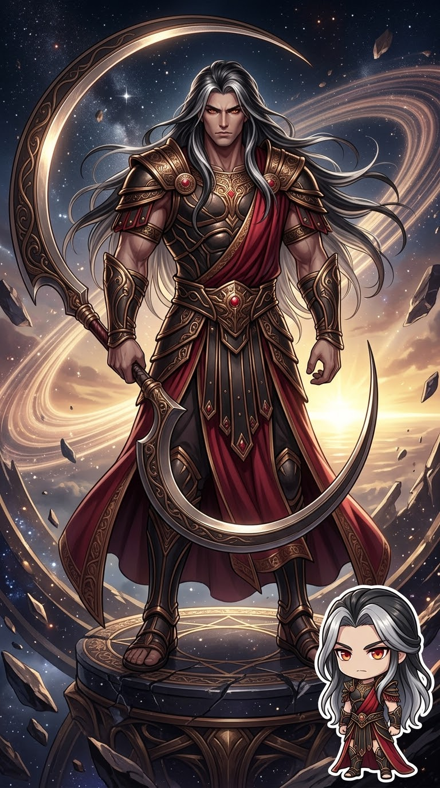
12 · GREEK MYTHOLOGY
推翻天空之王、後來被宙斯推翻的泰坦之王
烏拉諾斯壓制子女，使蓋亞痛苦不堪。克洛諾斯接受母親的計畫，以鐮刀伏擊父親並推翻他，成為新的統治者。泰坦時代由此開始，但克洛諾斯也逐漸走向與父親相似的恐懼。
他聽聞自己的孩子將推翻自己，便把瑞亞所生的孩子一一吞下。瑞亞以石頭替代新生的宙斯，讓他倖免於難。宙斯長大後救出兄姊，發動泰坦戰爭並取得勝利，克洛諾斯的統治終於結束。
THE TITAN WAR
宙斯聯合被囚禁的獨眼巨人與百臂巨人，向克洛諾斯及泰坦陣營發起決戰。獨眼巨人打造雷霆武器，百臂巨人投擲巨石，最終協助宙斯取得勝利。泰坦時代落幕，但泰坦的血脈並未消失，他們的子女仍在天界、海洋、人類與冥界的故事中發揮影響。
認識泰坦後裔 →